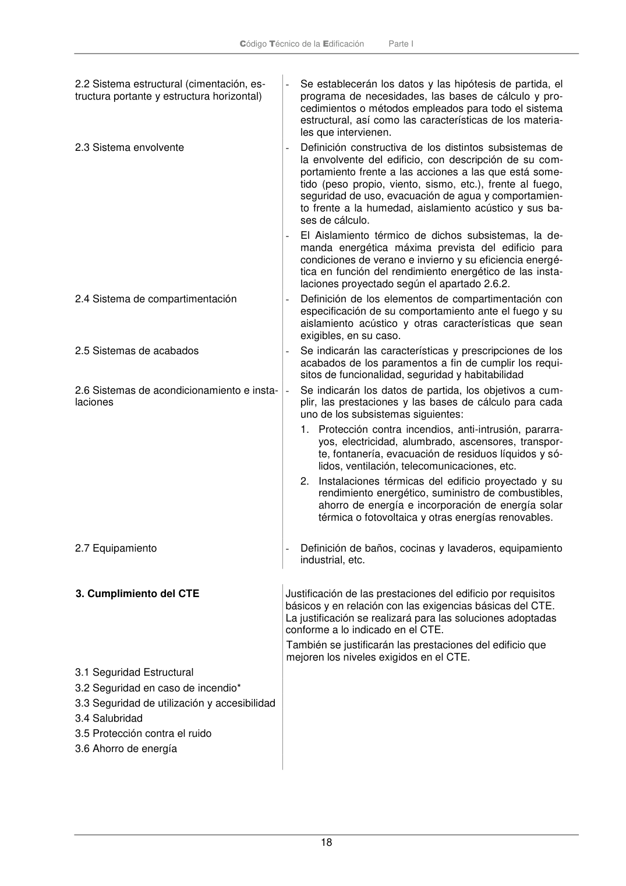

Parte I · edición 2022-06-14 · capa oficial
Documento PARTE-I-oficial · SHA-256 del PDF eaed39b98fbe715e9db817ab9bde93a5031c3d2c07440dd6a8653572b053a07f
Copia fiel del PDF fuente · Fuente oficial
Ficha de la disposición en la fuente oficial
Formatos: JSON del segmento · Markdown
2. Memoria constructiva Descripción de las soluciones adoptadas 2.1 Sustentación del edificio* - Justificación de las características del suelo y paráme- tros a considerar para el cálculo de la parte del sistema estructural correspondiente a la cimentación. Código Técnico de la Edificación Parte I 18 2.2 Sistema estructural (cimentación, es- tructura portante y estructura horizontal) - Se establecerán los datos y las hipótesis de partida, el programa de necesidades, las bases de cálculo y pro- cedimientos o métodos empleados para todo el sistema estructural, así como las características de los materia- les que intervienen. 2.3 Sistema envolvente - Definición constructiva de los distintos subsistemas de la envolvente del edificio, con descripción de su com- portamiento frente a las acciones a las que está some- tido (peso propio, viento, sismo, etc.), frente al fuego, seguridad de uso, evacuación de agua y comportamien- to frente a la humedad, aislamiento acústico y sus ba- ses de cálculo. - El Aislamiento térmico de dichos subsistemas, la de- manda energética máxima prevista del edificio para condiciones de verano e invierno y su eficiencia energé- tica en función del rendimiento energético de las insta- laciones proyectado según el apartado 2.6.2. 2.4 Sistema de compartimentación - Definición de los elementos de compartimentación con especificación de su comportamiento ante el fuego y su aislamiento acústico y otras características que sean exigibles, en su caso. 2.5 Sistemas de acabados - Se indicarán las características y prescripciones de los acabados de los paramentos a fin de cumplir los requi- sitos de funcionalidad, seguridad y habitabilidad 2.6 Sistemas de acondicionamiento e insta- laciones - Se indicarán los datos de partida, los objetivos a cum- plir, las prestaciones y las bases de cálculo para cada uno de los subsistemas siguientes: 1. Protección contra incendios, anti-intrusión, pararra- yos, electricidad, alumbrado, ascensores, transpor- te, fontanería, evacuación de residuos líquidos y só- lidos, ventilación, telecomunicaciones, etc. 2. Instalaciones térmicas del edificio proyectado y su rendimiento energético, suministro de combustibles, ahorro de energía e incorporación de energía solar térmica o fotovoltaica y otras energías renovables. 2.7 Equipamiento - Definición de baños, cocinas y lavaderos, equipamiento industrial, etc.
